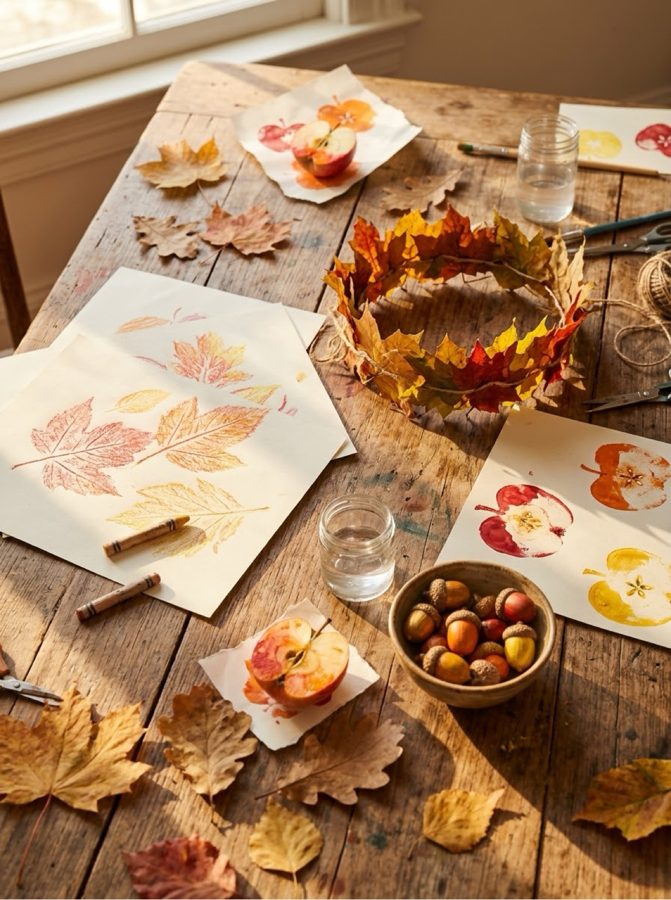
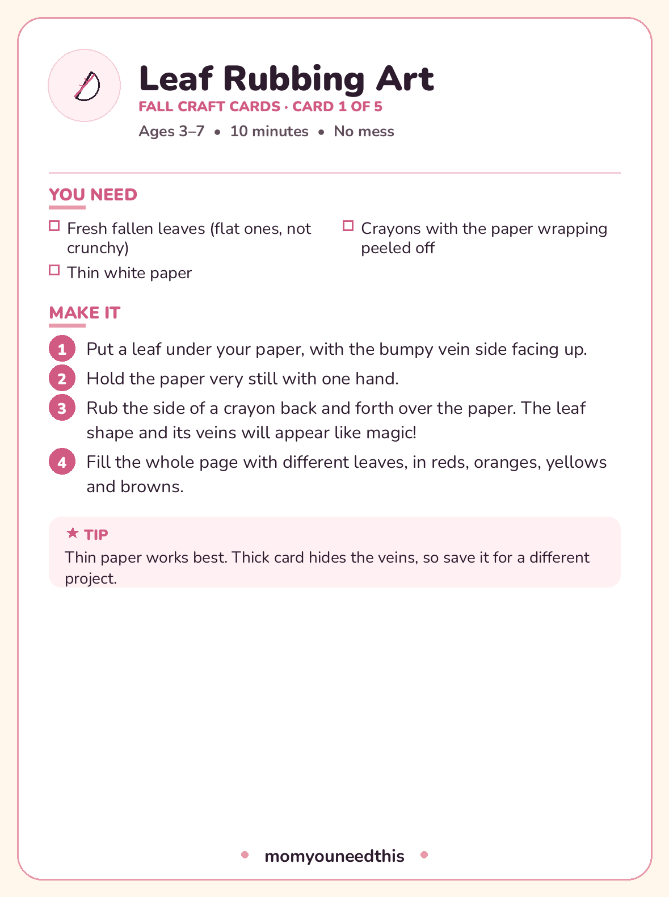

Fall Crafts Five autumn projects for ages 3–7 that start with a walk outside
The best fall crafts start with a walk: nearly everything on this page begins by collecting leaves, acorns, or one good apple. These five projects are fall crafts for kids ages 3 to 7 who want to make something today — leaf rubbing art, a leaf crown, apple stamping, acorn painting and a paper leaf garland — and every one comes with its materials list, numbered steps and a printable card. Print the set before your next walk and let the collecting be part of the craft.
Last updated: October 21, 2026

Quick Answer
Five projects, ages 3–7: leaf rubbing art (no mess at all — start here), a leaf crown, apple stamp prints, acorn rolling paintings, and a paper leaf garland. Most of the supplies come from the yard or the fruit bowl, and every craft has a free printable card with its materials and steps.
At a Glance
- Ages: 3–7
- What you get: 5 projects, plus all 5 as printable project cards in one free PDF
- Supplies: leaves, acorns, one apple, paper, crayons and washable paint
- Cost: Free — nature provides most of the materials
🍃 Leaf Rubbing Art
The closest thing to magic in this collection: hide a leaf under paper, rub a crayon over it, and the leaf — veins, edges, everything — appears. It costs nothing, makes no mess, and teaches kids to actually look at leaves. Do it on the walk home, on the kitchen table, anywhere.
You need:
- Fresh fallen leaves (flat ones, not crunchy)
- Thin white paper
- Crayons with the paper wrapping peeled off
- Put a leaf under your paper, with the bumpy vein side facing up.
- Hold the paper very still with one hand.
- Rub the side of a crayon back and forth over the paper. The leaf shape and its veins will appear like magic!
- Fill the whole page with different leaves, in reds, oranges, yellows and browns.
👑 Leaf Crown
Every kid should get to wear a crown of actual leaves at least once per fall. Real leaves make the most beautiful version and last an afternoon; the paper version in the card's tip lasts the season. Either way, the overlap-like-feathers trick is what makes it read as a crown and not a hat with leaves on it.
You need:
- A long strip of card or thick paper
- Big leaves — real ones, or cut from paper
- Glue
- A stapler (grown-up step)
- Grown-up step: measure the card strip around your child's head, and staple or glue it into a band that fits.
- Glue leaves all the way around the band, overlapping them a little like feathers.
- Let the glue dry for a few minutes.
- Wear your crown on a fall walk — and collect even more leaves as you go.
🍎 Apple Stamping
An apple cut across its middle has a secret: a star hiding in the core, and a perfect apple outline for printing. The prints make cards, wrapping paper, and table runners, and the whole project smells wonderful. One apple prints all afternoon.
You need:
- 1 apple
- Washable paint — red, green and yellow
- Paper or card
- A plate or tray for the paint
- A marker
- Grown-up step: cut the apple in half across the middle, and pat the cut side dry with a paper towel.
- Press the apple into the paint — or brush paint onto the cut side instead.
- Press the apple firmly onto the paper and lift it straight up, to print an apple shape.
- When the prints are dry, draw a little stem and leaf on each apple.
🌰 Acorn Painting
Painting without a brush, brushes without the control problem: acorns dipped in paint roll around a tray and leave trails, and every painting comes out different. It is process art at its best — the point is the rolling, the mixing, the surprise — and it works with conkers or marbles too.
You need:
- Clean, dry acorns (5–8)
- Washable paint
- A sheet of paper
- A shallow box or tray
- A spoon
- Put the paper flat in the bottom of the shallow box.
- Dip the acorns into paint and drop them onto the paper.
- Tip the box gently from side to side, so the acorns roll around and leave paint trails behind them.
- Scoop the acorns out with the spoon, and let your painting dry.
🍂 Paper Leaf Garland
The garland is the project that turns five crafts into a decorated house. Eight to twelve paper leaves on a string across a window changes the whole room, and the variation in the card — one thankful thought per leaf — turns it into a Thanksgiving decoration with real meaning behind it.
You need:
- Red, orange and yellow paper
- Scissors
- A pencil
- String
- A hole punch or tape
- Draw leaf shapes on the colored paper — or trace around real leaves.
- Cut out 8 to 12 leaves. Little ones can tear their leaves out instead of cutting.
- Punch a hole near the stem of each leaf, or tape each leaf along the string.
- Hang your garland across a window or a doorway.

🍂 Download Your Free Fall Craft Cards
All five projects as printable cards — one complete card per project
⬇️ Download Free Craft Cards 🖨️ Print🎁 Free printable for ages 3–7
🍁 Collecting Supplies Without the Meltdown
Collect more than you need. Leaves crumble, acorns roll under furniture, and the best leaf in the pile will be claimed by a sibling. A bag of spares has saved more fall craft afternoons than any other tip on this page. For the crown and rubbings, pick leaves that are fresh and flat — a day or two pressed under a heavy book makes them perfect, and stops the crown shedding as it is worn.
Acorns deserve ten quiet minutes before crafting: rinse them, check for tiny holes (a hole means a resident has already moved in — return that one to the yard), and let them dry. Clean, dry acorns take paint well and survive in a craft box afterwards.
And keep one honest swap in mind for the days when the yard does not cooperate: every project here works with paper substitutes. Paper leaves rub (less magically), stamp and garland just fine — the crown card's tip explains how.
🎨 More Free Fun for Moms & Kids
🎨 Crafts for Kids
The craft hub: seasonal card packs and projects by material. Visit the crafts hub.
❄️ Winter Crafts
Next season's set: snowflakes, a cotton-ball snowman and salt-dough ornaments. See winter crafts.
🎃 Halloween Crafts for Kids
Six not-too-spooky projects for ages 3–6 with printable cards. See Halloween crafts.
🎨 Free Coloring Pages
Hundreds of free coloring pages, including plenty of autumn leaves and pumpkins. See coloring pages.
❓ Frequently Asked Questions
What age are these fall crafts for?
Ages 3 to 7. Leaf rubbing and acorn painting suit the youngest children — no scissors, no drying, instant results. The leaf crown and garland involve a grown-up stapling or kid cutting, and apple stamping starts with a grown-up cutting the apple in half.
When is the best time of year for fall crafts?
Early and mid fall, while leaves are freshly fallen and still flexible. Late-season leaves turn crunchy and crumble in rubbings and crowns — though the paper versions of every project here work all year, and the garland makes a Thanksgiving decoration whenever you make it.
Do I have to use real leaves and acorns?
No. Every card includes or implies a paper swap: trace real leaves onto colored paper for the crown and garland, and use marbles or conkers instead of acorns for the rolling painting. Real ones are more fun to collect, but the projects themselves do not depend on them.
How long does each fall craft take?
Between 10 and 20 minutes each. The garland takes the longest because cutting out a dozen leaves is real work for small hands — tear the leaves instead of cutting and it speeds up wonderfully. Acorn painting is the fastest: set up, roll, done.
Are these crafts suitable for a classroom?
Yes — leaf rubbing in particular is a beloved classroom project because it needs only leaves, thin paper and crayons and makes no mess at all. The printable cards let each table follow its own project, and the garland makes a genuinely beautiful classroom display.